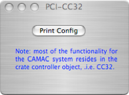

CAMAC/PCI Controller


The CAMAC PCI card interfaces with a CC32 controller in a CAMAC crate. The PCI card resides in a host computer. The dialog doesn’t do much.
Prints the controller status to the status log